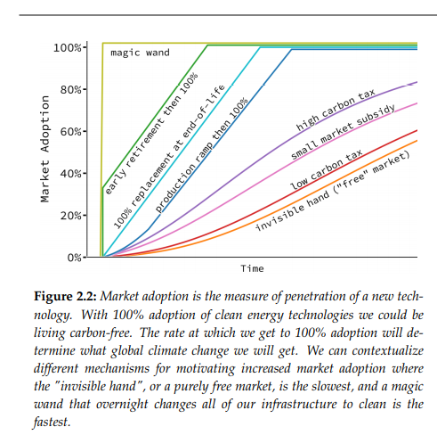
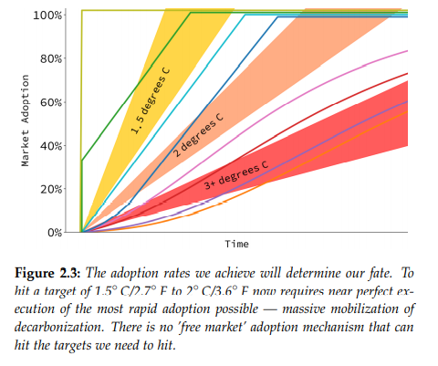
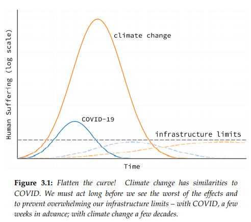

Created Thursday 27 August 2020
@2020 @book
Griffith, Saul; Fraser, Laura; Calisch, Sam (2020). Rewiring America: A Field Manual for the Climate Fight. rewiringamerica.org
.\Rewiring_America_Field_Manual.pdf
- financing transition with a low-interest "climate loan"
- there are precedents for doing this - public-private financing
- need to triple the amount of electricity delivered in the US
- new electricity grid needed
- job creation!
- "electrify everything"
- near 100% adoption rate for decarbonized solutions needed
- big purchases much more important than the little ones
- electric car
- heat pump
- solar rooftop - "personal zero-carbon infrastructure"
- big purchases much more important than the little ones
- new financing mechanisms needed - "climate loans"
- everyone has to be able to afford to be part of the solution
- electrifying everything will require nearly four times as much electricity
- fossil subsidies must end - and rules and regulations that artificially inflate the costs of RE
- target: 1.5 - 2 degrees C
- "endgame decarbonization": never purchasing machines or technologies that rely on burning fossil fuels, ever again
- this will save money, create jobs, and doesn't have to mean having less - IF DONE RIGHT
- "if what is politically possible is the extent of our ambition, we are doomed."
- what is technically necessary, based on the best, most comprehensive data we have
- energy costs can be lowered
- we need almost 100% adoption rate of decarb energy solutions starting right away
- immediate scaling up of ready to go solutions needed
- this isn't a crisis that can be solved with efficiency and simple improvements to current systems - it requires transformation
- but we can completely decarbonize without drastically changing our lifestyles
- what is needed:
- massive deployment of wind and solar
- huge roll-out of electric vehicles, heat pumps, and energy storage
- hydrogen and biofuels only in supporting roles
- how are we going to pay it? a better question is "at what interest rate"
- similar problems were solved with auto financing, the modern 30-year government-guaranteed mortgage, rural electrification
- "yes, and..."
- our situation is worse than most commonly reported emission trajectories conclude - because they assume rapid "negative emissions"
- committed emissions from machines that already exist will take us past 1.5 degrees -> early retirement needed
- industrial mobilization will take time
- "We now live in a permanent state of climate emergency where we must always agitate for faster and more ambitious action."
- human emissions have to be halved by 2030 (p. 10)
- starting in 2020 gives 10 years for each 50% cut
- starting in 2026 gives mere months for each 50% cut
- starting in 2000 would have given 30 years for each 50% cut
- now every time we retire a fossil fuel-burning machine, it must be replaced with a decarbonized machine
- adoption rates have to be 100%
- "A 100% adoption rate is only achieved by mandate. The invisible hand of markets is definitely not fast enough; it typically takes decades for a new technology to become dominant by market forces alone as it slowly increases its market share each year. A carbon tax isn’t fast enough, either. Market subsidies are not fast enough. The best we can do is early retirement of our heaviest emitters in combination with a mobilization of industry that enables 100% adoption rates." (p. 12)
- electric cars still only represent 2% of sales of US vehicles in 2018
- Lifetimes: (Study of life expectancy of home components. National Association of Home Builders / Bank of America Home Equity, 2007, and By the Numbers: How long will your appliances last? It depends. Consumer Reports, 2009.)
- Water heaters 10 years
- Refrigerators, 12
- Clothes dryers 13
- Rooftops 15
- Furnaces 18
- Cars and trucks 20
- thermostats 35
- power plants 50
- 13


14
"No matter how effectively we may sway the market to buy green technology, we are unlikely to decarbonize faster than the curve dictated by the natural replacement lifetime of existing machines. That's why we'll need incentives such as buy-back programs and subsidies to swap out fossil fuel-burning machines for electric ones as soon as possible."
"It may sound like this is a giant screed for government
intervention; it is not, I am merely stating what is technically
necessary. If your toilet was broken and you called me and
asked me what to do, I wouldn’t tell you “the free market will
fix that;” I’d tell you to call a plumber. That is where we’re at on climate change: no amount of hope in free market solutions can
change the fact that it is now too late to rely on the free market to act fast enough. We need to call the plumbers (and electricians,
and engineers, and manufacturers) to fix our infrastructure now."
Kumpi voittaa kädenväännön: luontoäiti vai näkymätön käsi?
If we just look at electric vehicles, batteries, wind
turbines, and solar modules, they need 4X, 16X, 12X and 10X
increases in production capacity. This is two or more doublings
of the current capacities. Even with something akin to the U.S.’
WWII production ramp–up, but this time globally, this would
take five or more years to achieve
18

19
One was the
modern long–term, government–backed home mortgage, which
allowed many people to buy homes, and anchored an enduring and stable middle class. Mortgages and low–interest loans
are important in the context of the climate emergency, because
while clean energy sources produce almost free electricity when
they’re up and running, they require up–front cash. You have
to have the spare capital to put solar panels on your roof in
order to enjoy long–term savings. Fixing the climate will require “climate loans” that will make it easier to buy electric cars
and electric home heating units rather than continue to rely on
fossil–fuel powered machines.
Another New Deal program that may be a model for how
we can finance electrification today was the Rural Electrification
Act of 1936, which provided federal loans to install electrical
systems to rural areas in the U.S. The Electric Home and Farm
Agency (EHFA), helped rural Americans finance purchases of
electric appliances, such as refrigerators, ranges, and hot water
heaters. EHFA ultimately financed some 4.2 million appliances,
at a time when there were around 30 million households in the
U.S (https://www.questia.com/library/journal/1G1-368073928/the-electric-home-and-farm-authority-model-t-appliances)
20
Roosevelt partnered with industrialists to build the
armaments we needed to get the job done, fast. The U.S. government drafted a list of critical munitions and offered capital
plus a guarantee of a 7% profit to industrialists who would turn
their engineering know–how and factories to producing a military arsenal that could fight Hitler and save democracy. The
profit was sometimes ridiculed as “patriotism plus 7%” by the
New Dealers, but it worked.
...
The WWII manufacturing build–up created over 16 million
new jobs, including jobs for women, adolescents, retirees, African–
Americans, and others historically left out of the workforce. No
jobs program before or since has been as successful at putting
people to work. After all the smoke had cleared, WWII investments in manufacturing continued to sustain American prosperity for decades.
21
At the height of the Great Depression, U.S unemployment was over 24% (recently, the COVID-19 pandemic put unemployment at the highest rate since then). Over nearly a decade of New Deal programs, joblessness stubbornly remained above 14%. With the wartime production effort, in 1944, unemployment was 1.2%
In 1940, the U.S. population was 132 million, and the GDP was
$100 billion. Between 1939 and 1945, the U.S. spent $186 billion
producing the war materials critical to the success of the Allies.
The GDP doubled in the next three years (1940–43). Today, the
US population is 330 million and the GDP is $21 trillion. If
we were to spend in the same proportions today, it would be
equivalent to $39 trillion. The good news is that the effort to
decarbonize should cost comparatively less than the financial
commitment required to win WWII.
{kind=link}
{kind=link}
{kind=link}
{kind=link}